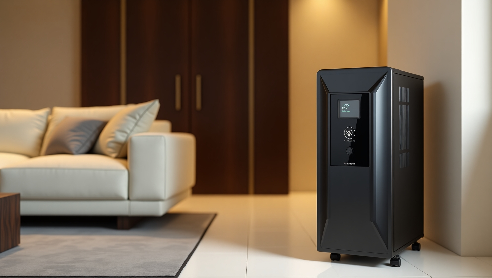

Uninterrupted Power Supply: Your Guide to Home UPS in India
1. Introduction: Understanding the Importance of Uninterrupted Power Supply (UPS)
In today's fast-paced world, uninterrupted power supply is crucial for every household. Whether it's monsoon season or the scorching summer heat, having a reliable home UPS system is essential to keep your daily activities running smoothly. If you're in Banaswadi, Bangalore and looking for the best options, look no further. This comprehensive guide will provide you with all the information you need about top-rated brands like Luminous, Amaron, Exide, Microtek, V-Guard, and Livfast. From the best tubular battery for your home inverter to solar power systems, we've got you covered. So, if you're wondering where to buy a home UPS in Banaswadi or need UPS installation services in Bengaluru, keep reading to find the perfect power backup solutions for your needs.
2. Overview of Home UPS Systems in India: Types and Features
Uninterrupted Power Supply (UPS) systems come in various types and offer different features to suit the diverse needs of households in India. Let's explore some of the common types of home UPS systems you can consider for your power backup requirements.
2.1 Line Interactive UPS
This type of UPS is commonly used for households. It offers protection against power fluctuations and provides battery backup when the main power supply is interrupted. Line interactive UPS systems come with an automatic voltage regulator (AVR) to ensure stable output voltage.
2.2 Online UPS
Online UPS systems are more advanced and offer continuous power protection. They provide battery backup without any interruption, making them suitable for sensitive electronic devices. Online UPS systems have a high input voltage range and offer higher efficiency.
2.3 Offline UPS
Also known as standby UPS, this type of UPS provides basic power backup during power outages. It involves a short transfer time from the main power supply to battery power. While offline UPS systems are cost-effective, they may not be suitable for devices that require constant power.
2.4 Solar UPS
With the increasing popularity of solar power in India, solar UPS systems have gained attention. These systems utilize solar panels to convert sunlight into electricity, which can power your home during outages. Solar UPS systems are eco-friendly and cost-effective in the long run.
When choosing a home UPS system, consider factors like power load, battery capacity, and backup time to ensure it meets your specific requirements. In the next section, we will delve into the features and advantages of each type, helping you make an informed decision. Stay tuned!
3. Key Benefits of Having a Home UPS System in India
Having a home UPS system in India offers several key benefits that can greatly enhance your household's power backup needs. Whether you are facing frequent power outages or simply want to ensure uninterrupted electricity supply for your sensitive electronic devices, a home UPS system can be a lifesaver.
One of the primary advantages is the ability to protect your appliances and electronic devices from power fluctuations. With a UPS system in place, you can rest assured that your valuable equipment is shielded from both sudden power surges and voltage drops, reducing the risk of damage and the need for costly repairs or replacements.
Another benefit is the convenience of uninterrupted power supply. Power outages can disrupt your daily activities, interrupt your work, and cause inconvenience. With a UPS system, you can seamlessly switch to battery backup, ensuring that essential appliances like lights, fans, computers, and Wi-Fi routers continue to run smoothly. This can be particularly crucial during critical tasks, important presentations, or even in emergency situations.
A home UPS system also provides an eco-friendly power backup solution. With the rising consciousness towards sustainability, having a UPS system that utilizes solar power can significantly reduce your carbon footprint. Solar UPS systems use solar panels to harness the sun's energy and generate electricity, allowing you to enjoy a clean and renewable energy source during outages.
Furthermore, a reliable home UPS system can positively impact your energy bills. By offering an efficient backup power solution, a UPS system ensures that you don't experience any wastage of electricity or unnecessary spikes in your energy consumption. This can lead to significant savings over time and make your investment in a UPS system even more cost-effective.
In the next section, we will delve further into the features and advantages of each type of UPS system, helping you make an informed decision when it comes to choosing the right system for your specific requirements. Stay tuned to discover which UPS system best suits your needs.
4. Choosing the Right Home UPS: Factors to Consider
When it comes to choosing the right home UPS system for your specific needs, there are several factors that you should take into consideration. Understanding these factors will enable you to make an informed decision and select a UPS system that meets both your power backup requirements and budget.
The first factor to consider is the power capacity of the UPS system. This refers to the amount of electrical load that the UPS can support. It is crucial to determine the total power consumption of the appliances and electronic devices you wish to connect to the UPS. This will ensure that the UPS can provide sufficient backup power to keep your essential devices running during outages.
Another important factor to consider is the battery type and capacity. The battery is the heart of the UPS system, and its performance directly impacts the duration for which the system can provide backup power. Different types of batteries have varying lifespans, recharge times, and maintenance requirements. Assessing your power backup needs and understanding the specific characteristics of different battery types will help you choose the most suitable option.
Furthermore, it is essential to assess the efficiency and reliability of the UPS system. Look for a UPS that offers high efficiency, meaning it can convert a greater percentage of electricity into usable power. An efficient UPS will not only provide longer backup times but also reduce energy wastage and save you money in the long run. Additionally, opt for a UPS system from a trusted and reputable manufacturer to ensure its reliability and longevity.
Finally, consider the input and output voltage compatibility of the UPS system. In India, the standard voltage may vary from region to region. It is crucial to select a UPS that can handle the specific voltage range in your area to ensure compatibility and optimal performance.
By taking these factors into consideration, you can confidently choose the right home UPS system that will cater to your power backup needs and provide uninterrupted electricity supply during outages. In the next section, we will discuss the different types of UPS systems available in the market, their features, and how they can cater to various requirements. Stay tuned!
5. Common Installation and Maintenance Issues with Home UPS Systems
Once you have selected the right home UPS system for your specific needs, it is important to ensure proper installation and regular maintenance to maximize its performance and longevity. While home UPS systems are designed for ease of use, there are a few common issues that users may encounter during installation or operation.
One common issue is improper installation. It is essential to follow the manufacturer's instructions and guidelines for installation. This includes correctly connecting the input and output power lines, ensuring proper grounding, and placing the UPS in a well-ventilated area to prevent overheating. Improper installation can lead to poor performance, damage to the UPS, and even safety risks.
Another common issue is neglecting regular maintenance. Like any electrical device, a home UPS system requires periodic maintenance to ensure its optimal functioning. This includes regular battery checks, cleaning the system's components, and firmware updates. Neglecting maintenance can result in reduced battery life, decreased backup time, and potential system failures during power outages.
Furthermore, some users may experience compatibility issues with certain appliances or electronic devices. It is important to check the compatibility of your UPS system with the devices you plan to connect to it. Certain high-powered devices or equipment may require specific compatibility features or modifications to work effectively with your UPS system.
Lastly, it is crucial to have a basic understanding of the troubleshooting steps for common UPS issues. Familiarize yourself with the indicators on your UPS system and what they signify, such as low battery alarms or fault indicators. This knowledge will help you identify and resolve issues quickly, reducing downtime during power outages.
By being aware of these common installation and maintenance issues, you can ensure a smooth and uninterrupted power supply from your home UPS system. In the next section, we will dive into the benefits of investing in a home UPS system and how it can enhance your daily life. Stay tuned!
6. Case Study: How an Indian Household Benefited from a Home UPS Installation
To understand the real-world impact of a home UPS system, let's take a look at a case study of an Indian household that recently installed one.
The Singh family, living in a suburban area with frequent power outages, decided to invest in a home UPS system to mitigate the inconvenience caused by these disruptions. They selected a reliable and high-capacity UPS that could support their essential household appliances and electronic devices.
Once the system was installed following the manufacturer's guidelines, the Singhs instantly experienced the benefits of uninterrupted power supply. During power outages, their UPS kicked in seamlessly, allowing them to continue their daily activities without interruption. With a long backup time, they could work on their computers, keep their appliances running, and even watch TV without any disruption.
The improved convenience and productivity extended beyond power outages. The UPS system maintained a constant supply of stable power, safeguarding their electronic devices from voltage fluctuations and potential damage. They no longer had to worry about abrupt shutdowns or lost data during fluctuations.
Moreover, the Singh family also appreciated the long-term cost savings offered by their UPS system. By preventing sudden power disruptions, their appliances and delicate electronics lasted longer, reducing the need for frequent repairs or replacements. This, in turn, resulted in substantial monetary savings over time.
In conclusion, the Singh family's experience showcases the practical benefits of a home UPS system in India. The uninterrupted power supply provided convenience, reliability, and long-term cost savings. In the following section, we will discuss the different types of home UPS systems available in the Indian market and guide you on choosing the right one for your specific needs. Stay tuned to learn more about the best options for your home!
7. Conclusion: Ensuring Reliability with Home UPS Solutions in India
As we've seen in the case study of the Singh family, a home UPS system can provide significant benefits in terms of convenience, reliability, and cost savings. But it's not just the Singhs who can benefit from uninterrupted power supply in India.
With the increasing frequency of power outages and voltage fluctuations in many parts of the country, having a home UPS system has become essential for households. Whether you live in a city with occasional power cuts or a rural area with limited access to electricity, a UPS can ensure that you never have to worry about sudden disruptions.
In the next section, we will delve into the different types of home UPS systems available in the Indian market. From basic models that provide power for a few hours to high-capacity systems that can support an entire house, there are plenty of options to choose from. We will also provide tips and considerations to help you select the best UPS for your specific needs.
By investing in a reliable home UPS system, you can ensure that your daily activities are not hampered by power outages. Say goodbye to the frustration of sudden shutdowns and the fear of data loss. Instead, embrace the peace of mind that comes with having a consistent and uninterrupted power supply in your home.
Ready to say goodbye to power outage stress?
Contact us today for a free consultation and find the perfect UPS system to power your home and protect your electronics!
Get a Free Quote Browse Our UPS SystemsOr, if you are in Banaswadi, Bangalore, visit our store Alpha Power System for personalized assistance!
Stay tuned for our next section, where we explore the various options available and guide you towards the best home UPS system for your needs. Don't miss out!